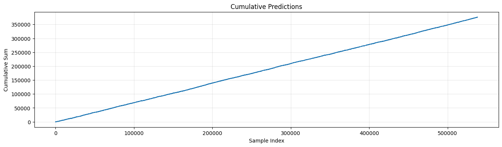
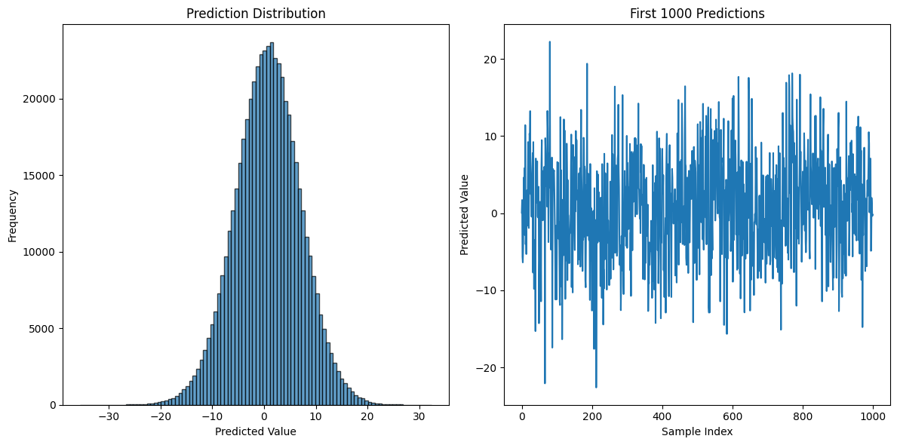

DRW - Crypto Market Prediction
Built a high-performancemodel to forecast crypto price movements using:
1. Feature Engineering:
- Created rolling statistics (mean,std, min/max over 5-30 periods)
- Added technical indicators (RSI, momentum) and interactions (ratios, differences)
- Optimized memory with downcasting (np.int8, np.float32)
- Trained an esemble (VotingRegressor) of Ridge Regression (L2 regularization) and XGBoost (tree_method="hist")
- Validation via TimeSeriesSplit to pervent leakage, cross-valiadted correlation for scoring
- Processed lagged features in chunks (chunk_size=10) for memory efficiency
- Rconstructed test-set timestamps using precomputed offsets to align temporal dependecies
- Results interpretation with feature importance plots (matplotlib) and prediction distributions
- Deployed batch prediction (batch_size=50k) to handle large-scale inference

